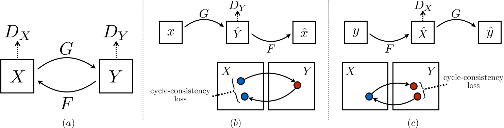

CycleGAN：循环 GAN
Unpaired Image-to-Image Translation using Cycle-Consistent Adversarial Networks
Zhu J Y , Park T , Isola P ,et al.Unpaired Image-to-Image Translation using Cycle-Consistent Adversarial Networks[J].IEEE, 2017.DOI:10.1109/ICCV.2017.244.
Image-to-image translation is a class of vision and graphics problems where the goal is to learn the mapping between an input image and an output image using a training set of aligned image pairs. However, for many tasks, paired training data will not be available. We present an approach for learning to translate an image from a source domain X to a target domain Y in the absence of paired examples. Our goal is to learn a mapping G:X→Y such that the distribution of images from G(X) is indistinguishable from the distribution Y using an adversarial loss. Because this mapping is highly under-constrained, we couple it with an inverse mapping F:Y→X and introduce a cycle consistency loss to push F(G(X))≈X (and vice versa). Qualitative results are presented on several tasks where paired training data does not exist, including collection style transfer, object transfiguration, season transfer, photo enhancement, etc. Quantitative comparisons against several prior methods demonstrate the superiority of our approach.
摘要：图像到图像的转换是一类视觉和图形的问题，其目标是使用对齐的图像对进行学习输入图像和输出图像之间的映射。但是对于许多任务而言，并不存在大量配对的训练数据。我们提出了一种学习在没有配对例子的情况下，将图像从源域 X 转换到目标域 Y 的方法。我们的目标是学习一个映射 G：X → T，使得使用对抗性损失无法区分是来自 G(x) 的图像分布还是 Y 的图像分布。因为这个映射是高度欠约束的，我们将这个映射与其逆映射 F：Y → X 耦合，并引入循环一致性损失，以推动 F(G(X)) ≈ X（反之亦然）。在不存在配对训练数据的几个任务上，如风格转移、对象变形、季节转移、照片增强等，给出了定性结果。与先前几种方法的定量比较表明了我们方法的优越性。
CycleGAN 模型
引入循环一致性损失，实现了无需配对训练数据的跨域图像转换。
- 双向映射：同时学习 $G:X\rightarrow Y$ 和 $F:Y\rightarrow X$，确保生成的图像在目标域中分布一致。
- 循环一致性约束：约束 $F(G(x))\approx x$ 和 $G(F(y))\approx y$，防止生成器陷入模式崩溃。
CycleGAN 具体框架
该框架的目标是通过给定训练集 $\{x_i\}^{N}_{i=1}$ 和 $\{y_i\}^{M}_{j=1}$，学习源域和目标域之间的映射。
- 其中，$x_i \in X$，$y_i \in Y$；$x \sim p_{data}(x)$，$y \sim p_{data}(y)$。

如上图所示，模型包含两个映射：$G:X\rightarrow Y$ 和 $F:Y\rightarrow X$。
另外，还加上两个对抗判别器 $D_X$ 和 $D_Y$：
- $D_X$ 用于区分图像 $\{x\}$ 和生成图像 $\{F(y)\}$；
- $D_Y$ 用于区分图像 $\{y\}$ 和生成图像 $\{G(x)\}$。
引入对抗性损失和循环一致性损失：
- 对抗性损失用于匹配生成图像的分布和目标域的分布；
- 引入循环一致性损失，用于防止学习到的映射 $G$ 和 $F$ 相互矛盾。
对抗损失
对于映射 $G:X\rightarrow Y$ 和判别器 $D_Y$，定义对抗损失为：
$$ \mathcal{L}_{GAN}(G,D_Y,X,Y) = \mathbb{E}_{y \sim p_{data}(y)} \log D_Y(y) + \mathbb{E}_{x \sim p_{data}(x)} \log(1 - D_Y(G(x))) $$- $G$ 试图生成与目标域 $Y$ 相似的图像 $G(x)$，而判别器 $D_Y$ 试图区分生成图像 $G(x)$ 和真实图像 $y$。
- $G$ 的目标是最小化这个目标，而判别器 $D_Y$ 则试图最大化这个目标，即：$\min_{G}\max_{D_Y}\mathcal{L}(G,D_Y,X,Y)$。
类似地引入映射 $F:Y\rightarrow X$ 和 $D_X$ 的对抗损失：
$$ \mathcal{L}_{GAN}(F,D_X,Y,X) = \mathbb{E}_{x \sim p_{data}(x)} \log D_X(x) + \mathbb{E}_{y \sim p_{data}(y)} \log(1 - D_X(F(y))) $$- $F$ 的目标是最小化这个目标，而判别器 $D_X$ 则试图最大化这个目标，即：$\min_{F}\max_{D_X}\mathcal{L}(F,D_X,Y,X)$。
循环一致性损失
这两个映射转换应该是可以循环的，即 $x\rightarrow G(x) \rightarrow F(G(x)) \approx x$ 和 $y\rightarrow F(y) \rightarrow G(F(y)) \approx y$。
所以使用循环一致性损失以促进转换循环：
$$ \mathcal{L}_{cyc}(G,F) = \mathbb{E}_{x \sim p_{data}(x)} \left[\vert\vert F(G(x)) - x \vert\vert _1 \right] + \mathbb{E}_{y \sim p_{data}(y)} \left[\vert\vert G(F(y)) - y \vert\vert _1 \right] $$完整的目标函数
总目标为：
$$ \mathcal{L}(G,F,D_X,D_Y) = \mathcal{L}_{GAN}(G,D_Y,X,Y) + \mathcal{L}_{GAN}(F,D_X,Y,X) + \lambda \mathcal{L}_{cyc}(G,F) $$- $\lambda$ 控制两个损失的权重。
存在解：
$$ G^*, F^* = \arg\min_{G,F}\max_{D_X,D_Y} \mathcal{L}(G,F,D_X,D_Y) $$CycleGAN 实现细节
生成器
基于 Johnson 等人提出的残差网络（ResNet）结构，适用于图像生成任务（如风格迁移、超分辨率）。
组件：
- 初始卷积层：
c7s1-k表示一个 7 × 7 的卷积层，步长为 1，输出通道数为 k，后接实例归一化（InstanceNorm）和 ReLU 激活。 - 下采样层：
dk表示 3 × 3 卷积层，步长为 2，通道数为 k，用于逐步降低分辨率。 - 残差块：
Rk包含两个 3 × 3 卷积层，每层通道数为 k，保留输入与输出的残差连接。 - 上采样层：
uk表示 3 × 3 分数步长卷积（反卷积），步长为 1/2，用于恢复分辨率。 - 末端卷积层：
c7s1-3生成 RGB 三通道输出。
结构配置：
- 低分辨率（128 × 128）：6 个残差块，结构为：
c7s1-64 → d128 → d256 → 6×R256 → u128 → u64 → c7s1-3。 - 高分辨率（256 × 256 及以上）：9 个残差块，结构为：
c7s1-64 → d128 → d256 → 9×R256 → u128 → u64 → c7s1-3。
关键设计：
- 实例归一化（Instance Normalization）：提升生成图像的视觉质量，尤其在风格迁移任务中抑制内容无关的变量。
- 反射填充（Reflection Padding）：减少边缘伪影，提升生成图像的平滑度。
判别器
来自 Isola 等人的 70 × 70 PatchGAN。
层级结构：
- 初始层：C64 为 4 × 4 卷积，步长为 2，输出 64 通道，无实例归一化，使用 LeakyReLU（斜率 0.2）。
- 后续层：C128 → C256 → C512，每层为 4 × 4 卷积 + 实例归一化 + LeakyReLU，逐步增加通道数。
- 末端输出：通过卷积生成 1 通道的判别结果（局部区域的真假概率图）。
关键设计：
- 局部判别：关注图像局部区域（70 × 70 patch）的真实性，而非全局，降低计算量。
- 全卷积结构：支持任意尺寸输入，适用于不同分辨率的任务。
训练策略
损失函数改进
最小二乘 GAN（LSGAN）代替负对数似然，采用均方误差（MSE）目标函数，缓解梯度消失问题，生成图像质量更高，训练更稳定。
- 训练 $G$ 最小化 $\mathbb{E}_{x \sim p_{data}(x)}[(D(G(x))-1)^2]$；
- 训练 $D$ 最小化 $\mathbb{E}_{y \sim p_{data}(y)}[(D(y)-1)^2] + \mathbb{E}_{x \sim p_{data}(x)}[D(G(x))^2]$。
原来的损失函数：
$$ \begin{cases} \mathcal{L}_{GAN}(G,D_Y,X,Y) = \mathbb{E}_{y \sim p_{data}(y)} \log D_Y(y) + \mathbb{E}_{x \sim p_{data}(x)} \log(1 - D_Y(G(x)))\\ \mathcal{L}_{GAN}(F,D_X,Y,X) = \mathbb{E}_{x \sim p_{data}(x)} \log D_X(x) + \mathbb{E}_{y \sim p_{data}(y)} \log(1 - D_X(F(y))) \end{cases} $$用 LSGAN 代替后：
$$ \begin{cases} \mathcal{L}_{GAN}(G,D_Y,X,Y) = \mathbb{E}_{y \sim p_{data}(y)} [(D_Y(y)-1)^2] + \mathbb{E}_{x \sim p_{data}(x)} [D_Y(G(x))^2]\\ \mathcal{L}_{GAN}(F,D_X,Y,X) = \mathbb{E}_{x \sim p_{data}(x)} [(D_X(x)-1)^2] + \mathbb{E}_{y \sim p_{data}(y)} [D_X(F(y))^2] \end{cases} $$对于 $G$ 和 $D_Y$，采用的是 Least-Squares GAN（LSGAN）形式，其具体表达式为上面的 $\mathcal{L}_{GAN}(G,D_Y,X,Y)$，包含两部分：
- 第一项 $\mathbb{E}_{y\sim p_{data}(y)}[(D_Y(y)-1)^2]$，用于训练判别器 $D_Y$ ，要求对真实图像 $y$ 的输出接近 1，即让 $D_Y$ 识别真实图像为真实。
- 第二项 $\mathbb{E}_{x\sim p_{data}(x)}[D_Y(G(x))^2]$，用于训练判别器 $D_Y$ ，要求对生成图像 $G(x)$ 的输出接近 0，即让 $D_Y$ 识别生成图像为假。
同时，在训练生成器 $G$ 时，只关心让生成图像 $G(x)$ 看起来足够真实，也就是使得 $D_Y(G(x))$ 输出接近 1。因此，生成器 $G$ 的目标就是最小化：$\mathbb{E}_{x\sim p_{data}(x)}[(D_Y(G(x))-1)^2]$，这一目标正好出现在上式中的第一项，但生成器只会更新这一部分，而判别器 $D_Y$ 则同时考虑了真实图像和生成图像两部分的损失。
对于反方向（$F$ 与 $D_X$），也有相似的表达 $ L_{GAN}(F,D_X,Y,X)$。这里，生成器 $F$ 训练时的目标是最小化 $\mathbb{E}_{y\sim p_{data}(y)}[(D_X(F(y))-1)^2]$。
将两个方向的对抗性损失合并，再加上后续的循环一致性损失，形成了总损失函数：
$$ \mathcal{L}(G,F,D_X,D_Y) = \mathcal{L}_{GAN}(G,D_Y,X,Y) + \mathcal{L}_{GAN}(F,D_X,Y,X) + \lambda \mathcal{L}_{cyc}(G,F) $$在上式中：
- $L_{GAN}(G,D_Y,X,Y)$ 部分包含了生成器 $G$ 的训练目标 $\mathbb{E}_{x\sim p_{data}(x)}[(D_Y(G(x))-1)^2]$（生成器更新时使用）以及判别器 $D_Y$ 的训练目标（结合真实图像的 $\mathbb{E}_{y\sim p_{data}(y)}[(D_Y(y)-1)^2]$ 和生成图像的 $\mathbb{E}_{x\sim p_{data}(x)}[D_Y(G(x))^2]$）。
- $L_{GAN}(F,D_X,Y,X)$ 部分类似地，包含了生成器 $F$ 与判别器 $D_X$ 的对应目标。
恒等映射损失（Identity Loss）
在特定任务中，强制生成器在输入目标域图像时保持原图不变：
$$ \mathcal{L}_{identity} = \mathbb{E}_y [\vert\vert G(y) - y \vert\vert _1] + \mathbb{E}_x [\vert\vert F(x) - x \vert\vert _1] $$作用：防止生成器过度改变输入的颜色或光照（例如避免将白天的照片转为日落色调）。
训练稳定性优化
- 图像缓冲区（Image Buffer）：存储最近生成的50张图像，用于更新判别器。避免判别器仅依赖当前生成器的最新输出，减少模式崩溃风险。
- 学习率调度：初始学习率设为 0.0002（Adam优化器），前 100 个 epoch 保持不变。后100个epoch线性衰减至0，逐步收敛模型。
- 权重初始化：从高斯分布 $N(0,0.02)$ 采样，避免初始值过大或过小。
- 批量大小：固定为 1（单张图像训练），节省显存并适应高分辨率任务。
- 任务特定调整：
- 艺术风格迁移：加入恒等映射损失（权重为 $0.5\lambda$，$\lambda=10$）。
- 季节转换/物体变换：使用 ImageNet 子集，图像尺寸统一为 256 × 256。
训练集与训练参数
数据集配置：
- Cityscapes（语义标签↔照片）：2975 张训练图像，分辨率 128 × 128。
- Google Maps（地图↔航拍图）：1096 张图像，分辨率 256 × 256，按地理纬度划分训练/测试集。
- 艺术风格迁移：从 Wikiart和 Flickr 收集数据，筛选后包含莫奈（1074 张）、梵高（401 张）等风格。
- 季节转换：从 Flickr 下载约 2000 张冬夏景观图，分辨率 256 × 256。
超参数设置：
- 循环一致性损失权重：$\lambda = 10$（通过消融实验验证其重要性）。
- 训练周期：通常为 200 个 epoch（前 100 固定学习率，后 100 线性衰减）。
- 硬件与框架：基于 PyTorch 和 Torch 实现，使用 NVIDIA GPU 加速。
代码分析
CycleGAN/models/cycle_gan_model.py
class CycleGANModel(BaseModel):
"""
CycleGAN paper: https://arxiv.org/pdf/1703.10593.pdf
"""
def __init__(self, opt):
"""初始化"""
BaseModel.__init__(self, opt)
self.loss_names = ['D_A', 'G_A', 'cycle_A', 'idt_A', 'D_B', 'G_B', 'cycle_B', 'idt_B']
visual_names_A = ['real_A', 'fake_B', 'rec_A']
visual_names_B = ['real_B', 'fake_A', 'rec_B']
if self.isTrain and self.opt.lambda_identity > 0.0:
visual_names_A.append('idt_B')
visual_names_B.append('idt_A')
self.visual_names = visual_names_A + visual_names_B
if self.isTrain:
self.model_names = ['G_A', 'G_B', 'D_A', 'D_B']
else:
self.model_names = ['G_A', 'G_B']
做初始化、损失配置等等。
self.netG_A = networks.define_G(opt.input_nc, opt.output_nc, opt.ngf, opt.netG, opt.norm,
not opt.no_dropout, opt.init_type, opt.init_gain, self.gpu_ids)
self.netG_B = networks.define_G(opt.output_nc, opt.input_nc, opt.ngf, opt.netG, opt.norm,
not opt.no_dropout, opt.init_type, opt.init_gain, self.gpu_ids)
if self.isTrain: # define discriminators
self.netD_A = networks.define_D(opt.output_nc, opt.ndf, opt.netD,
opt.n_layers_D, opt.norm, opt.init_type, opt.init_gain, self.gpu_ids)
self.netD_B = networks.define_D(opt.input_nc, opt.ndf, opt.netD,
opt.n_layers_D, opt.norm, opt.init_type, opt.init_gain, self.gpu_ids)
定义生成器和判别器。
此处 G_A 为 G, G_B 为 F, D_A 为 D_Y, D_B 为 D_X。
if self.isTrain:
if opt.lambda_identity > 0.0: # 仅当输入和输出图像具有相同数量的通道时才有效
assert(opt.input_nc == opt.output_nc)
self.fake_A_pool = ImagePool(opt.pool_size)
self.fake_B_pool = ImagePool(opt.pool_size)
创建图像缓冲区以存储以前生成的图像
self.criterionGAN = networks.GANLoss(opt.gan_mode).to(self.device) # define GAN loss.
self.criterionCycle = torch.nn.L1Loss()
self.criterionIdt = torch.nn.L1Loss()
self.optimizer_G = torch.optim.Adam(itertools.chain(self.netG_A.parameters(), self.netG_B.parameters()), lr=opt.lr, betas=(opt.beta1, 0.999))
self.optimizer_D = torch.optim.Adam(itertools.chain(self.netD_A.parameters(), self.netD_B.parameters()), lr=opt.lr, betas=(opt.beta1, 0.999))
self.optimizers.append(self.optimizer_G)
self.optimizers.append(self.optimizer_D)
定义损失函数和优化器（对抗损失：
MSELoss；循环一致性损失：L1Loss；循环重建损失：L1Loss）。
初始化优化器；schedulers 将由函数BaseModel.setup自动创建。
def forward(self):
self.fake_B = self.netG_A(self.real_A) # G_A(A)
self.rec_A = self.netG_B(self.fake_B) # G_B(G_A(A))
self.fake_A = self.netG_B(self.real_B) # G_B(B)
self.rec_B = self.netG_A(self.fake_A) # G_A(G_B(B))
前向传播。
netG_A生成假图像 B，netG_B重建图像 A；netG_B生成假图像 A，netG_A重建图像 B。
生成假图像与循环重建。
def backward_D_basic(self, netD, real, fake):
pred_real = netD(real)
loss_D_real = self.criterionGAN(pred_real, True)
pred_fake = netD(fake.detach())
loss_D_fake = self.criterionGAN(pred_fake, False)
loss_D = (loss_D_real + loss_D_fake) * 0.5
loss_D.backward()
return loss_D
判别器对真实图像进行预测，接着计算对真实图像损失；然后对假图像进行预测，计算对假图像的损失。
最后将两个损失相加，然后反向传播。
def backward_D_A(self):
"""Calculate GAN loss for discriminator D_A"""
fake_B = self.fake_B_pool.query(self.fake_B)
self.loss_D_A = self.backward_D_basic(self.netD_A, self.real_B, fake_B)
def backward_D_B(self):
"""Calculate GAN loss for discriminator D_B"""
fake_A = self.fake_A_pool.query(self.fake_A)
self.loss_D_B = self.backward_D_basic(self.netD_B, self.real_A, fake_A)
在缓冲池种随机选择一个假图像，然后计算判别器的损失。
def backward_G(self):
lambda_idt = self.opt.lambda_identity
lambda_A = self.opt.lambda_A
lambda_B = self.opt.lambda_B
if lambda_idt > 0:
self.idt_A = self.netG_A(self.real_B)
self.loss_idt_A = self.criterionIdt(self.idt_A, self.real_B) * lambda_B * lambda_idt
self.idt_B = self.netG_B(self.real_A)
self.loss_idt_B = self.criterionIdt(self.idt_B, self.real_A) * lambda_A * lambda_idt
else:
self.loss_idt_A = 0
self.loss_idt_B = 0
self.loss_G_A = self.criterionGAN(self.netD_A(self.fake_B), True)
self.loss_G_B = self.criterionGAN(self.netD_B(self.fake_A), True)
self.loss_cycle_A = self.criterionCycle(self.rec_A, self.real_A) * lambda_A
self.loss_cycle_B = self.criterionCycle(self.rec_B, self.real_B) * lambda_B
self.loss_G = self.loss_G_A + self.loss_G_B + self.loss_cycle_A + self.loss_cycle_B + self.loss_idt_A + self.loss_idt_B
self.loss_G.backward()
分别计算恒等损失、对抗损失和循环一致性损失。
def optimize_parameters(self):
self.forward()
self.set_requires_grad([self.netD_A, self.netD_B], False)
self.optimizer_G.zero_grad()
self.backward_G()
self.optimizer_G.step()
self.set_requires_grad([self.netD_A, self.netD_B], True)
self.optimizer_D.zero_grad()
self.backward_D_A()
self.backward_D_B()
self.optimizer_D.step()
- 前向计算生成图像。
- 冻结判别器，计算梯度，更新参数。
- 解冻生成器，计算梯度，更新参数。
代码复现
复现代码：Github/01.ref_and_note/05.CycleGAN.py
CycleGAN 实验结果
与其他基线模型的性能对比
定量评估：
- AMT感知测试（地图↔航拍图任务）：
- CycleGAN 的欺骗率显著优于基线方法（如 CoGAN、SimGAN 等），在 256 × 256 分辨率下：
- 地图→航拍图：26.8% vs 基线的 0.6%-2.6%
- 航拍图→地图：23.2% vs 基线的 0.3%-2.9%
- FCN 分数（Cityscapes 标签→照片任务）：
- CycleGAN 的 FCN 分数（0.58）接近有监督方法pix2pix（0.85），远超其他无监督方法（如 BiGAN/ALI 的 0.41）。
- 语义分割指标（照片→标签任务）：
- CycleGAN 的类别平均交并比（Class IOU）为0.16，显著高于SimGAN（0.07）和CoGAN（0.08）。
定性分析：
- 生成图像在视觉质量上接近有监督方法 pix2pix（见图5、图6），尤其在风格迁移和物体变换任务中表现突出。
消融实验（Ablation Study）
关键结论：
- 对抗损失（GAN Loss）：移除后生成图像质量严重下降（FCN 分数从 0.58 降至 0.22 ），表明对抗训练对生成真实性至关重要。
- 循环一致性损失（Cycle Loss）：移除后模型无法保持输入与输出的合理映射（如标签→照片任务中生成无意义图像）。
- 单向循环约束（仅前向或后向）：导致模式崩溃或训练不稳定（如马→斑马任务中生成单一结果）。
多任务应用效果
风格迁移：
- 成功将照片转换为莫奈、梵高等艺术家的整体风格，而非单幅作品风格。
- 加入身份映射损失（Identity Loss）后，有效保留输入色彩（如避免白昼→黄昏的错误转换）。
物体变换：
- 马↔斑马、苹果↔橙子等任务中，生成图像在纹理和颜色上高度逼真。
季节转换：
- 冬季↔夏季景观转换中，能合理调整植被颜色和光照（如积雪→绿树）。
照片增强：
- 智能手机拍摄的花卉照片→DSLR浅景深效果，部分成功。
局限性分析
- 几何变换能力弱：在需改变物体形状的任务（如狗↔猫）中，生成器仅调整颜色/纹理，无法改变结构（见图17）。
- 数据分布依赖性：训练数据缺乏多样性时易失败（如未包含“骑马”场景的斑马数据集）。
- 与有监督方法的差距：复杂任务（如语义分割）中，CycleGAN可能混淆类别（如树↔建筑），需弱监督辅助。
与神经风格迁移（Gatys et al.）的对比
优势：
- CycleGAN可学习整体风格集合（如莫奈全部作品），而Gatys方法依赖单一样本。
- 生成结果更自然逼真（见图15-16），尤其在需要高真实性的任务（如照片增强）中表现更优。
劣势：
- Gatys方法在单样本风格迁移中更灵活，而CycleGAN需针对每个风格集合重新训练。
然而，CycleGAN在几何变换和复杂语义任务中仍有局限，未来需结合弱监督或更强大的生成架构进一步突破。